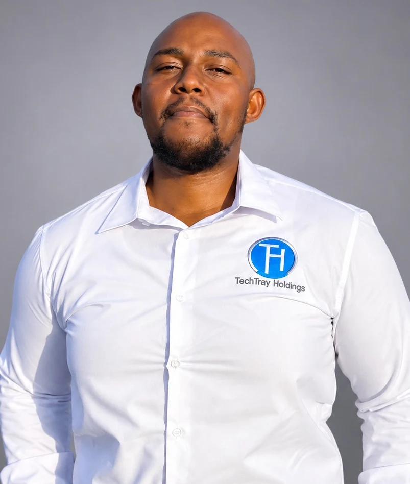
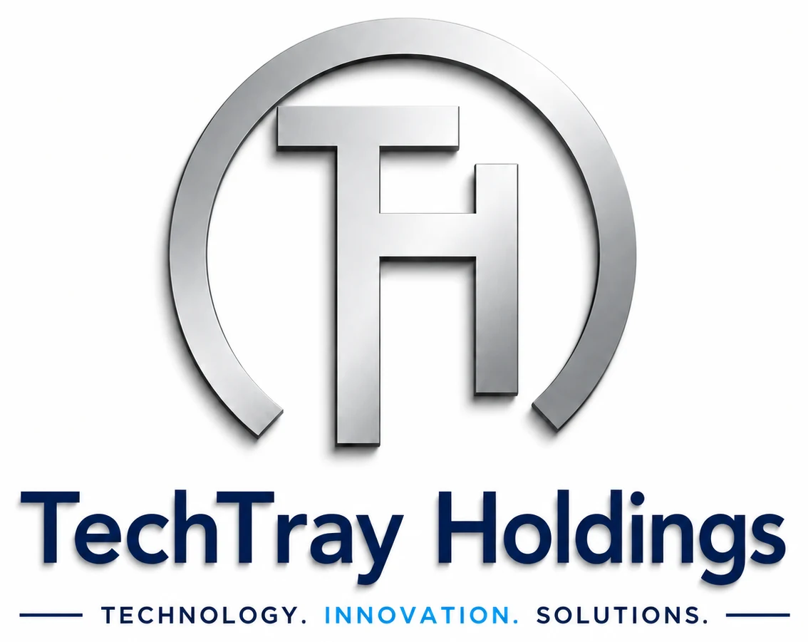

Everyday essentials.
A lasting connection.
Eduvos and Alumni Association products showing how apparel, technology and everyday accessories can carry a brand with purpose.
FOUNDER. BUILDER. CONNECTOR.
I’m Lainon Sethabela, founder of TechTray Holdings. I turn everyday needs into practical solutions, meaningful brands and lasting connections.

01 / THE PERSON BEHIND THE IDEAS01 / THE PERSON
I believe good business starts with understanding people.
My journey has taken me through sales, customer relationships, retail leadership and entrepreneurship. Today, I bring that experience together at TechTray Holdings, a business I founded in Vanderbijlpark.
From a useful piece of technology to a gift someone reaches for every day, I’m interested in the details that make an idea matter. I work closely with clients, connect the right products and people, and see the process through.
As an Eduvos alumnus and an entrepreneur still building, I also care about sharing what I’m learning with the next generation of founders.
02 / THE WORK
A closer look at the products, people and
possibilities behind TechTray.
Eduvos and Alumni Association products showing how apparel, technology and everyday accessories can carry a brand with purpose.
A proposed Student Life collection spanning apparel, laptop sleeves, notebooks, power banks and bottles.
Real conversations, thoughtful sourcing and attention to the finished product. That’s how I like to work.
THROUGH TECHTRAY HOLDINGS

Accessories, charging, audio and curated retail ranges with display solutions.
02Useful corporate, alumni and event gifts that keep a brand part of everyday life.
03Custom apparel, branded merchandise, signage and thoughtful visual presence.
Understand the need → Source & design → Quote & approve → Deliver & support
03 / THE PURPOSE
There’s room for more of us to succeed.
Being part of the Eduvos Entrepreneur Incubation Hub pitch event reminded me why it matters to show up for emerging entrepreneurs. Listening to new ideas, sharing practical feedback and encouraging someone to keep going are all part of building a stronger business community.
I bring the perspective of a founder in the work: finding customers, building relationships and turning ideas into something useful.
Let’s talk entrepreneurship04 / THE NEXT CONVERSATION
A business brief, a collaboration or an opportunity to support the next generation. I’d love to hear about it.
techtrayholdings@gmail.com